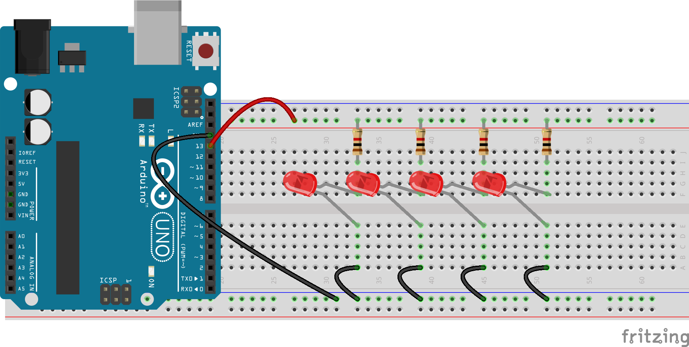
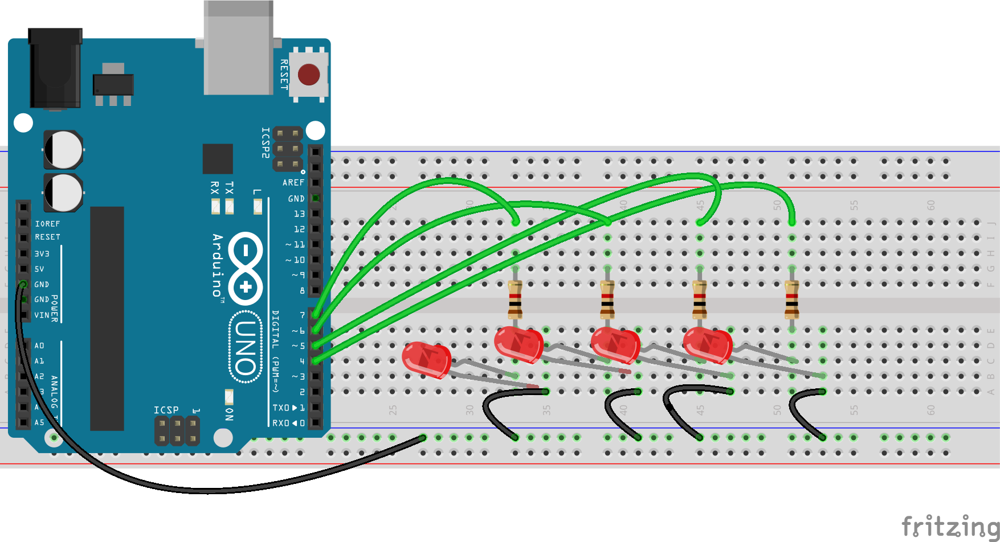

Preparation
The Arduino platform has since its start in 2005 grown to become one of the most recognizable brands in the space of electronics and embedded design.
- Study the following introductionary texts on the (workings of the) Arduino:
Download the Arduino Integrated Developen Environment (IDE) and make sure your Arduino is found by this software; you can easily check this by opening Files → Examples → 01.Basics → Blink and hitting the Upload button on the top-left of the IDE. If the connection between your computer and the Arduino is correct, the code will upload and the small onboard LED will start to blink.
If your computer cannot find the Arduino, you'll get an error message stating something like can't open device. In that case, use Tools → Port to select another port (those are actually your USB-ports)

- Have a look at this nice wooden adding machine.
Exercises
Off course, we need to use our breadboard to actually create interesting stuff, as the pins on the Arduino are too few, too narrow and too error prone to be workable.
Exercise 1: expanding on the blink example
Make sure you have the blinking LED example loaded on your Arduino. As has been explained, the pin that corresponds to the buildin LED is 13. Make use of this knowledge to have a LED on the breadboard blink. Next, add a few more LEDs on the same pin (or port, as they are also called regularly). For a nice effect, you can perhaps use different colors of LEDs.


Can you make use of the signal invertor that we created at the beginning of last week to have an LED on the breadboard shine when the one on the Arduino is off, without changing the code on the Arduino? How about having two LEDs blink one after the other? Note that for this to work, you have to differentiate between the signal (pin 13) and the current (5V otr 3.5V).
Exercise 2: Input and output of analog signals
Step 1: create a walking light
Realise a breadboard with four LEDs in parallel. Have the positive pin of each of the LEDs wired to a different (preferably sequential) port on the Arduino (e.g. pins 4, 5, 6, and 7). Next, create a new Arduino-sketch in which you define all those pins as OUTPUT (you should do this in the setup() method; have a look at the BlinkingLed-example).

Step 2: iterate over the LEDs
Now, in the loop() method, you should iterate over all those pins and set them to HIGH, wait for a few microseconds, set them to LOW again and repeat the process for the next pin. Have a look at the code below to get an idea of this process:
void loop() {
digitalWrite(4, HIGH);
delay(500);
digitalWrite(4, LOW);
delay(500);
}
Now, in your loop() iterate over all the pins that the LEDs are connected to and have every pin switch on and off. If all goes well, you have created a walking light. Can you make this light go back and forth as well? Play around with the value of the call to delay() to get a feeling of the effects of the changes you make.
Step 3: add a variable resistor
Add a variable resistor (a potentiometer) to your breadboard. Connect the external pins to the plus and the minus and the middle pin to an analog input of the Arduino; look at the drawing and the image below to see how to do this.
Next, create a new sketch and copy the code below. If you run this sketch with the serial monitor open, you will see the value that the Arduino is reading from the potentiometer. If you turn it, you will notice that the value that it is reading goes from 0 to 1023, while the second parameter is going from 1 to 255 (this is an edited example from Arduino.cc itself).
const int analogInPin = A0; // Analog input pin that the potentiometer is attached to
int sensorValue = 0; // value read from the pot
int outputValue = 0; // the value we are going to use later on
void setup() {
Serial.begin(9600);
}
void loop() {
// read the analog in value:
sensorValue = analogRead(analogInPin);
// map it to the range of the analog out:
outputValue = map(sensorValue, 0, 1023, 0, 255);
Serial.print("sensor = ");
Serial.print(sensorValue);
Serial.print("\t output = ");
Serial.println(outputValue);
delay(2);
}
Step 4: putting it all together
Now add the code above to your walking light code, so that it changes the value of the call to delay() in your walking light. Have the Arduino read and map the value of the potentiometer on every loop; if all goes well, you are now able to change the speed with which the LEDs are 'walking' by changing the value of the potentiometer.
Next week, we will use several diffent sensors to change the speed of this walking light.
Exercise 3
Working with LEDs is fun and all, but sometimes we want some more action than just walking lights. In such a case we use actors instead of sensors. In this exercise, we are going to use a potentiometer to control the angle of rotation of a servo-meter. As always, this is just to introduce you to the general workings in the hope that you can use these techniques in one way or another in your own project.
Servos are clever devices. Using just one input pin, they receive the position from the Arduino and they go there. Internally, they have a motor driver and a feedback circuit that makes sure that the servo arm reaches the desired position. But what kind of signal do they receive on the input pin?
It is a square wave. Each cycle in the signal lasts for 20 milliseconds and for most of the time, the value is LOW. At the beginning of each cycle, the signal is HIGH for a time between 1 and 2 milliseconds. At 1 millisecond it represents 0 degrees and at 2 milliseconds it represents 180 degrees. In between, it represents the value from 0–180. This is a very good and reliable method. The graphic below makes it a little easier to understand.
Luckely, we don't have to create all this machinery by ourselves: Arduino has a build-in library Servo, that we can use to our benefit. Have a look at the code below (which you can download here). Here, we are using this library to rotate the servo to the left and to the right every second.
// Include the Servo library
#include <Servo.h>
// Declare the Servo pin
int servoPin = 3;
// Create a servo object
Servo Servo1;
void setup() {
// We need to attach the servo to the used pin number
Servo1.attach(servoPin);
}
void loop(){
// Make servo go to 0 degrees
Servo1.write(0);
delay(1000);
// Make servo go to 90 degrees
Servo1.write(90);
delay(1000);
// Make servo go to 180 degrees
Servo1.write(180);
delay(1000);
}
Realise the following setup on your breadboard (of course, we don't actually need a breadboard in this case) and upload the code to your Arduino. Make sure you understand what is going on and why the system is doing what it is doing.
Now, use your knowledge of sensors to add a light sensor to the setup, so that the amount of light on the sensor translates into the rotation of the servo.
Assignment
TBD